CS184/284A Fall 2026 Homework 2 Write-Up
Link to webpage: https://cal-cs184-student.github.io/hw2-asiek-writeup/
Link to GitHub repository: https://github.com/cal-cs184-student/hw2-asiek
Overview
Both halves of this assignment are about one problem: how do you make something look smooth when all you can actually draw is flat triangles.Section I is the geometry side. Part 1 implements de Casteljau's algorithm for Bezier curves, which is just linear interpolation applied over and over. Part 2 reuses that same routine for surfaces, running it along one axis and then the other, so the surface case needs no new maths at all.
Section II is the connectivity side, and this is where most of the work went. Part 3 computes vertex normals by averaging the faces around each vertex, which is what makes a coarse mesh shade as though it were smooth. Parts 4 and 5 implement edge flip and edge split, the two operations that let a mesh rearrange itself, and Part 6 combines them into Loop subdivision.
The two halves debug very differently. If the Bezier code is wrong, the curve is visibly in the wrong place and you can work backwards from the picture. The half-edge code is nothing but pointers, so a half-wired mesh renders perfectly and then breaks several operations later, nowhere near the actual mistake. Almost every bug I hit in Part 5 was a pointer I had decided didn't need updating.
Section I: Bezier Curves and Surfaces
Part 1: Bezier curves with 1D de Casteljau subdivision
The algorithm
de Casteljau's algorithm evaluates a Bezier curve at a parameter \(t\) by repeated linear interpolation. Given \(n\) control points, you interpolate between each adjacent pair at \(t\), which gives \(n-1\) points. Repeat on those, and keep going until a single point is left. That point is the curve at \(t\).Each round is one level of subdivision. For the \(i\)-th output point of a level,
\[ \mathbf{q}_i = (1-t)\,\mathbf{p}_i + t\,\mathbf{p}_{i+1} \]so with four control points the levels go 4, 3, 2, 1, which is \(3 + 2 + 1 = 6\) interpolations in total. Sweeping \(t\) from 0 to 1 and recording that final point traces the whole curve.
Implementation
evaluateStep performs exactly one level, not the whole recursion. The surrounding
code calls it repeatedly: drawCurve runs it \(n-1\) times to reach the final point,
and render runs it eval_level times so that pressing E can show
the construction one row at a time.
The body is a single loop over adjacent pairs:
for(int i = 1; i < points.size(); i++) {
result.push_back(points[i] * t + (1-t) * points[i-1]);
}
Starting the index at 1 and running to size() gives \(n-1\) iterations, using the
pairs \((0,1), (1,2), \dots\). Here \(t\) is a class member rather than a parameter, which is what
lets mouse scrolling change it: scroll_event writes to t and the next
redraw picks it up.
Two details are worth stating because getting either backwards still produces a plausible
picture. The weights are paired so that \(t = 0\) returns \(\mathbf{p}_i\) and \(t = 1\) returns
\(\mathbf{p}_{i+1}\); swapping them traces the identical curve but runs the evaluated point
backwards as you scroll, so the rendered curve will not reveal the mistake. And because
Vector2D overloads its arithmetic operators, the interpolation is written on whole
points rather than per-component, which meant Part 2 could reuse the same line unchanged for
Vector3D.
Results
A custom curve with six control points, stepped through one level at a time with E:
|
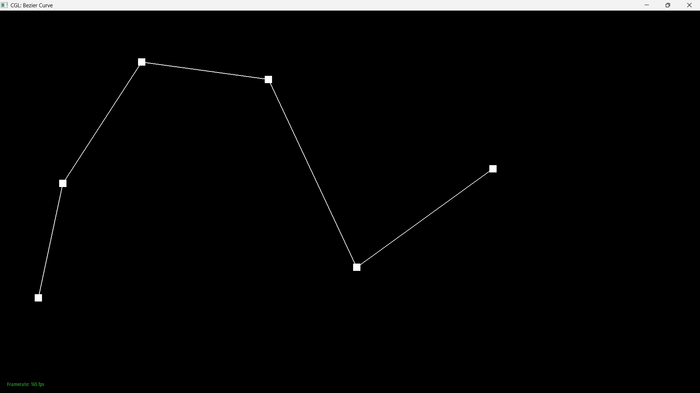 |
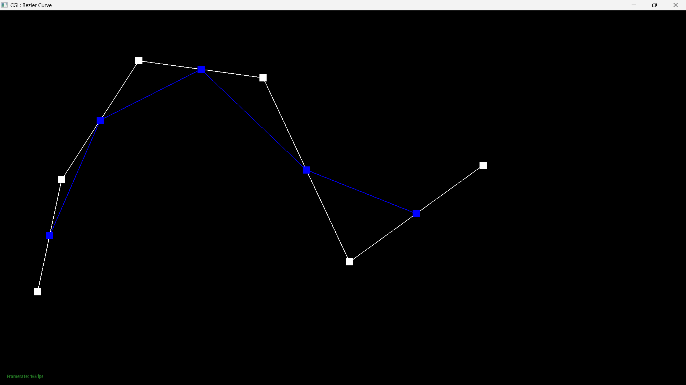 |
|
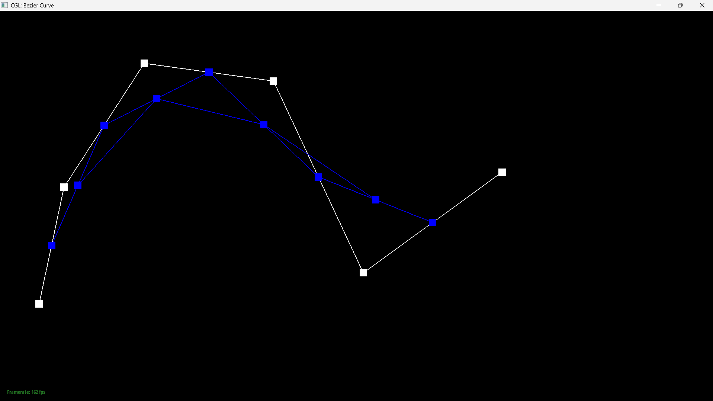 |
|
|
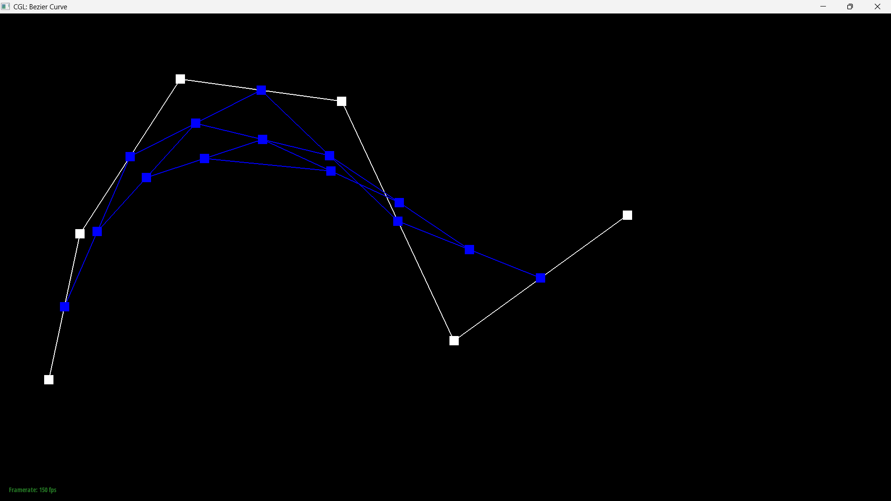 |
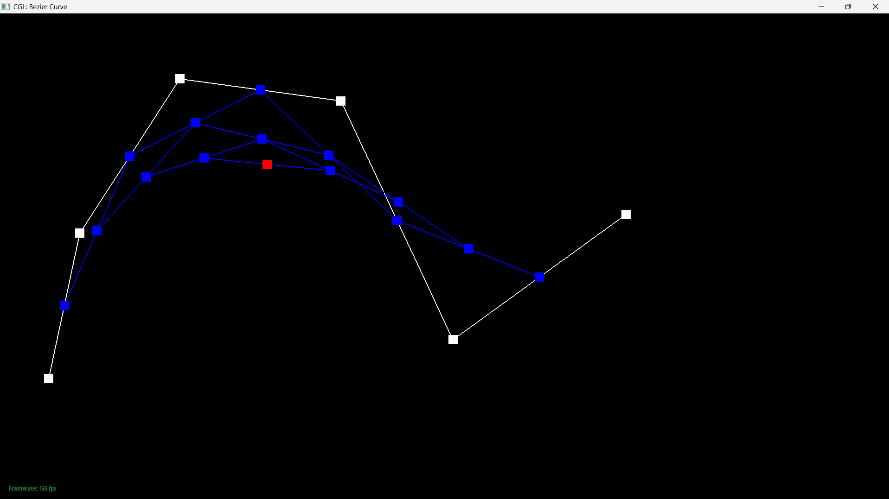 |
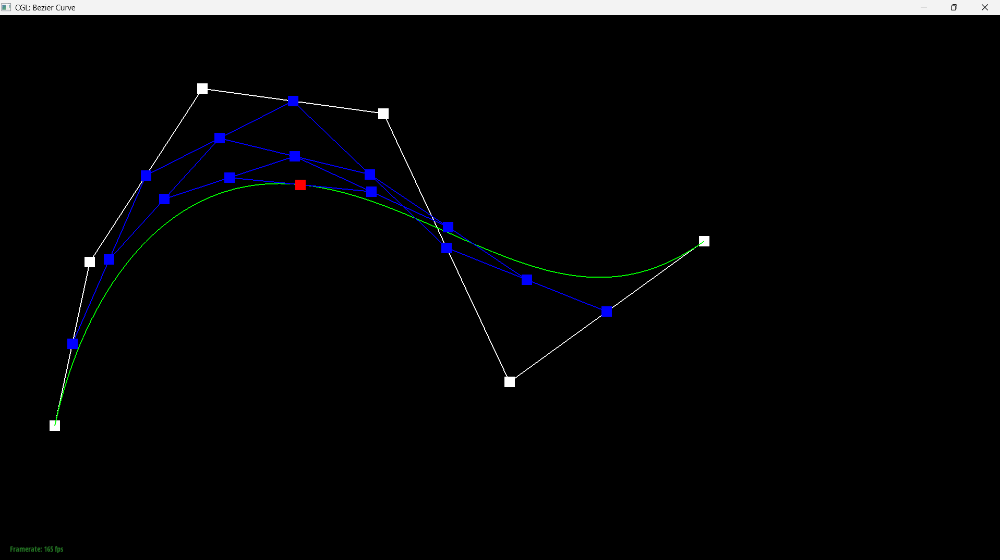
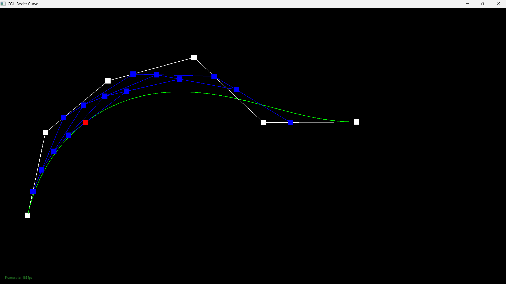
Part 2: Bezier surfaces with separable 1D de Casteljau
Extending the algorithm
A curve has one parameter and a list of control points. A surface has two parameters and a grid of them, 4 by 4 for a bicubic patch, and the extension exploits the fact that the construction is separable: you can run de Casteljau along one axis and then along the other.Evaluating at \((u,v)\) is two passes. First treat each row of the grid as the control points of an ordinary Bezier curve and evaluate it at \(u\). Four rows collapse to four points. Those four points are themselves the control points of a new curve, the moving curve, and evaluating it at \(v\) gives the surface point. Sweeping \(u\) slides the moving curve across the patch, and sweeping \(v\) walks along it, so the pair of parameters sweeps out the whole surface.
The construction is symmetric: doing columns at \(v\) first and rows at \(u\) second gives the same point.
Implementation
This part is three small functions stacked on each other.evaluateStep is the same single-level interpolation as Part 1, with two changes:
it works on Vector3D, and \(t\) arrives as a parameter instead of a member, because
the patch needs to evaluate at \(u\) and at \(v\) separately. Since Part 1 was written in terms of
whole vectors rather than components, the loop body carried over verbatim.
evaluate1D runs that step until one point is left:
while(currentPoints.size() > 1){
currentPoints = evaluateStep(currentPoints, t);
}
evaluate then does the two passes, collapsing each row of
controlPoints at \(u\) and the results at \(v\). Because a row of the grid is already
a std::vector<Vector3D>, it can be passed straight to evaluate1D
with no copying or index juggling.
Result
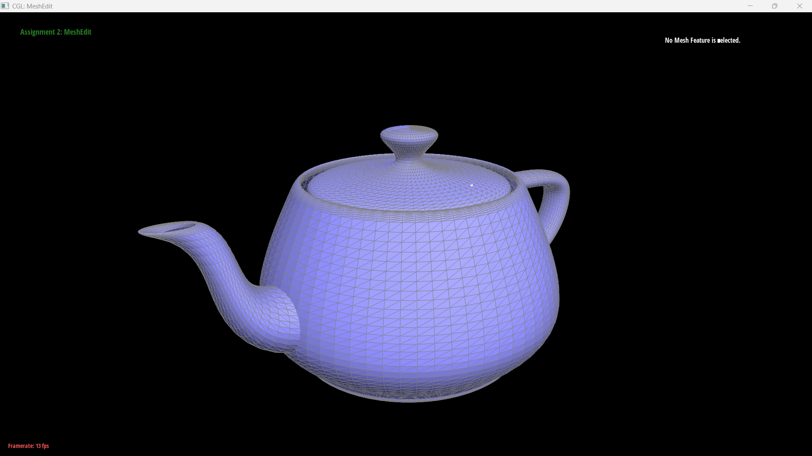
bez/teapot.bez evaluated by my implementation. The surface is
tessellated by sampling evaluate(u,v) over a grid in \((u,v)\).Section II: Triangle Meshes and Half-Edge Data Structure
Part 3: Area-weighted vertex normals
Approach
A triangle has exactly one normal, taken from its plane, but Phong shading needs a normal at every vertex. The standard fix is to average the normals of the faces meeting at that vertex, \[ N_v = \frac{\sum_i w_i N_i}{\left\|\sum_i w_i N_i\right\|} \] with the weights \(w_i\) here being the face areas. Area weighting beats uniform weighting because uniform weights let whichever side of the vertex happens to have been tessellated more finely dominate the average, even though the underlying surface is unchanged.Finding the faces around a vertex is what the half-edge structure is for. Each half-edge knows
its next around a face, its twin across an edge, and the
vertex at its base. Walking next stays inside one triangle; to rotate to
the neighbouring triangle you cross the edge and step forward again. I used
h->next()->next()->twin(), which for a triangle lands on another half-edge
rooted at the same vertex, fanning around until it returns to the start.
The trick that makes it short
The implementation never computes an area and never normalises a face normal. For two edge vectors \(\mathbf{a}, \mathbf{b}\) radiating from the vertex, the cross product \(\mathbf{a} \times \mathbf{b}\) points along the face normal and has magnitude equal to twice the triangle's area. So the raw, unnormalised cross product is already \(\text{area} \times \hat{N}\), up to a constant factor of 2.Substituting into the formula above, the magnitudes cancel:
\[ \sum_i \text{area}_i \hat{N}_i \;=\; \sum_i \frac{1}{2}\|\mathbf{c}_i\| \frac{\mathbf{c}_i}{\|\mathbf{c}_i\|} \;=\; \frac{1}{2}\sum_i \mathbf{c}_i \]and the factor of \(\frac{1}{2}\) disappears in the final normalisation. So the whole function
is: accumulate cross(a,b) raw, call .unit() once on return. Calling
.unit() inside the loop is the bug this is designed to avoid, since it discards
exactly the magnitude that was serving as the weight, silently producing the uniformly weighted
average instead.
One C++ detail: Vertex::normal() is const, so the accessors return
HalfedgeCIter rather than HalfedgeIter. The idiom in the header comment
is written for the non-const case and will not compile here as written.
Results
|
|
|
Part 4: Edge flip
Approach
Two triangles sharing an edge form a quadrilateral, and the shared edge is one of its two diagonals. Flipping means using the other diagonal instead. No vertex moves and no element is created or destroyed, so the entire operation is pointer reassignment and runs in constant time.Labelling the shared edge \(a\)–\(b\) with opposite corners \(c\) and \(d\), the two triangles \((a,b,c)\) and \((b,a,d)\) become \((c,d,b)\) and \((d,c,a)\), joined along \(c\)–\(d\).
What actually has to change
The useful way to think about this is by category, because the four kinds of element behave differently:- Half-edge
next,vertex,face— all change. The two half-edges on the flipped edge get new endpoints, and the four outer ones migrate between faces, which is the part that is easy to miss. - Half-edge
twinandedge— unchanged. No half-edge ever changes which edge it belongs to in a flip. - Vertex and face
halfedge()— can go stale and must be reassigned. Ifa->halfedge()was the flipped half-edge, it now starts at a different vertex entirely. - Edge
halfedge()— unchanged, since each edge still owns the same two halves.
An Edge stores only a half-edge pointer and no endpoints, so "the edge now connects
\(c\) and \(d\)" is not recorded anywhere in the edge itself. It is entirely a consequence of
having reassigned the two half-edges' vertex fields.
Implementation tricks
Two things made this tractable.First, read the whole neighbourhood into locals before writing anything. Six half-edges,
four vertices and two faces are captured at the top. If you instead navigate with expressions like
h0->next() while reassigning, you read pointers you have already overwritten and
the failure is almost impossible to localise.
Second, use setNeighbors and pass every field, including the unchanged ones.
Its signature takes all five at once, so it is impossible to forget one. Passing
h1->twin() for a twin that does not change costs nothing; omitting the call
entirely is what causes trouble.
The function also returns early on boundary edges. One of the two neighbouring faces of a boundary edge is a virtual boundary loop rather than a real triangle, so the flip is undefined there.
Results

|
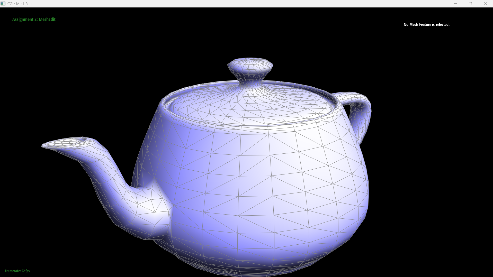 |
A cheap and surprisingly strong test: flip the same edge twice. A correct implementation returns the mesh to its original state, and a partially wired one usually survives the first press and breaks visibly on the second.
Part 5: Edge split
Approach
Splitting inserts a new vertex \(m\) at the midpoint of an edge and connects it to the two opposite corners, turning two triangles into four. Unlike the flip, this genuinely creates geometry.Working out the element counts before writing any code is worth the two minutes, because they are forced and they catch mistakes early. Four triangles need \(4 \times 3 = 12\) half-edges and there were 6, so 6 new half-edges. Four faces where there were 2, so 2 new faces. The original edge becomes two edges and two cross edges appear, so 8 edges where there were 5, giving 3 new edges. Plus the one new vertex.
The counts are lower than they first look because the original edge and its two half-edges are
reused as one of the halves rather than being replaced. I kept e0 as the
\(d\)–\(m\) half, which is the cheaper choice: the half-edge dc keeps its base
vertex \(d\), so one fewer field has to change.
Implementation
The body falls into three phases, and trying to interleave them is what makes this function hard:- Read the existing neighbourhood into locals, as in Part 4.
- Allocate all twelve new elements up front with
newVertex(),newEdge(),newFace()andnewHalfedge(), without touching their fields. - Wire everything:
setNeighborson all ten half-edges involved, then every back-pointer.
The reason allocation has to finish before wiring is that new elements come back
completely blank. A freshly created half-edge has a default-constructed
_twin, so an expression like h6->twin() reads an iterator pointing at
nothing. You cannot navigate from a new element; you have to have already named everything it
needs to point at.
I named the half-edges by direction rather than by number, ma, am,
mc, cm and so on. With ten in flight this is the difference between
verification being a lookup and being a puzzle, since checking that a face's cycle closes is then
just reading the names left to right: \( \texttt{dc}(d{\to}m) \to \texttt{ma}(m{\to}a) \to
\texttt{ad}(a{\to}d) \).
The new vertex's half-edge has to lie along the edge that was split rather than along one of the new cross edges. Part 6 relies on that to tell which edges came from the original mesh.
Debugging journey
This function produced four distinct bugs, and all of them compiled cleanly.Over-allocation left orphaned elements. I initially created 4 new edges and 8 new
half-edges, treating both halves of the split edge as new, which left the original
e0, dc and cd sitting in the mesh's lists still pointing at
their old neighbours. Nothing visibly breaks, because nothing in the current scene references
them. The spec's requirement that "the mesh should not have any elements that is not connected" is
about exactly this, and it would have surfaced in Part 6, which iterates every edge in the
mesh.
A next pointer into the wrong triangle. I set cm->next() to
a half-edge that did not start where cm ended, so one of the four face cycles never
closed. Writing the four intended triangles out as a comment and then checking each cycle
name-by-name is what found it.
Two outer half-edges got the wrong edge. While updating the four outer
half-edges' next and face, I passed the newly created edges for two of
them instead of their own existing edges. The effect is that one edge ends up with three
half-edges claiming it. A quick invariant to check by hand: every edge should be named by exactly
two setNeighbors calls.
Missing back-pointers. setNeighbors only writes into half-edges;
the halfedge() field on each vertex, edge and face is a separate assignment. This is
more dangerous here than in Part 4: there, a missed pointer left something merely stale, whereas a
newly allocated element's pointer is uninitialised memory. Both m (brand new) and
c (whose half-edge was rebased onto \(m\)) needed setting.
A C++ aside, and the reason this one is nastier than a compile error:
FaceIter f2, f3 = newFace(); does not create two faces. The initialiser binds only to
the last declarator, so f2 is left default-constructed and newFace() is
called once. It compiles without a warning, and the damage only shows when something dereferences
f2. I wrote the same mistake three times, once per pair of new elements.
Results
|
|
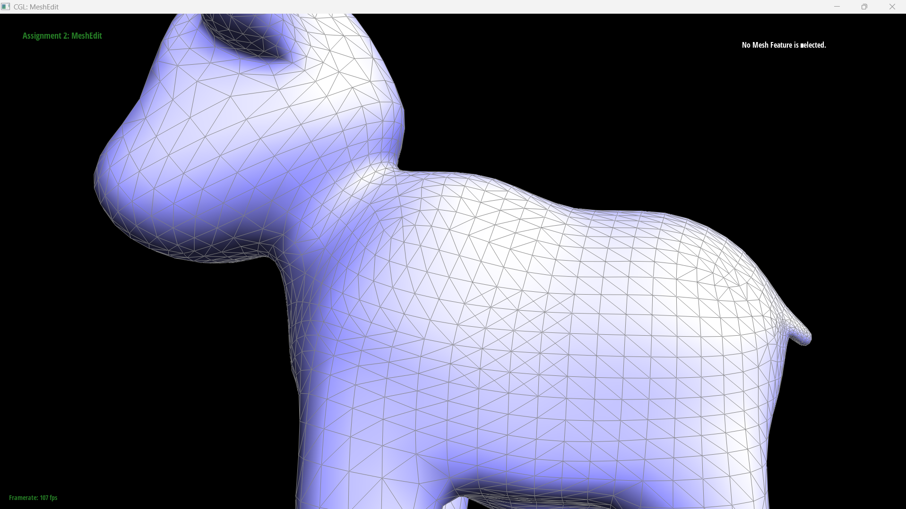 |
|
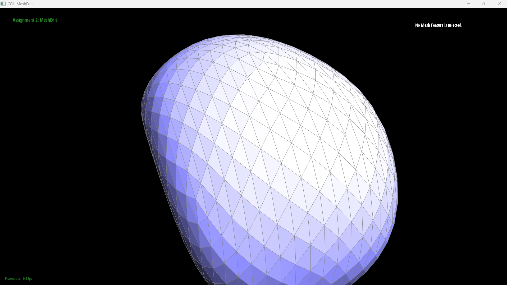 |
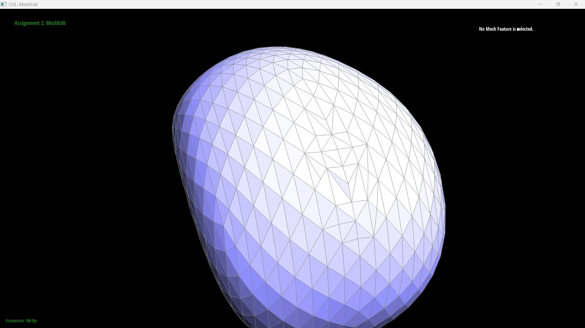 |
The test that exercises the back-pointers specifically is splitting an edge that was itself created by an earlier split, since that walks the pointers the previous call wrote.
Part 6: Loop subdivision for mesh upsampling
Approach
Loop subdivision turns every triangle into four and moves every vertex to a weighted average of where things used to be. It is built entirely out of the two operations from Parts 4 and 5, so this part is orchestration rather than new pointer work.The implementation is five passes:
- New positions for the existing vertices. Each one moves to \((1 - nu)P + u\sum_i N_i\) over its \(n\) neighbours, with \(u = 3/16\) when \(n = 3\) and \(3/(8n)\) otherwise. The neighbours come from the same fan traversal as Part 3.
- Positions for the vertices that do not exist yet. For an edge \(A\)–\(B\)
with opposite corners \(C\) and \(D\), the new midpoint belongs at
\(\frac{3}{8}(A+B) + \frac{1}{8}(C+D)\), stored in
Edge::newPosition. - Split every original edge, transferring the stored position onto the new vertex and
marking it
isNew. - Flip the new edges that join an old vertex to a new one.
- Copy
newPositionintoposition.
Why the positions are computed first
Steps 1 and 2 readposition and write only newPosition; nothing is
committed until step 5. This is not tidiness. The rule is a weighted average over the
original mesh, so if a vertex were updated in place then every vertex processed after it
would be averaging a neighbour that had already moved, and the result would depend on the order
the vertex list happened to be in.
Why the flips are needed at all
This was the part I found least obvious, because the splits alone already produce the right number of triangles. Splitting one edge turns 2 triangles into 4, and for a closed triangle mesh \(E = \frac{3}{2}F\), so splitting every edge adds \(2E = 3F\) faces and gives \(4F\) exactly. No flip creates anything.The problem is that the four triangles are the wrong four. splitEdge is local and
eager: it has to leave a valid triangulation after every single call, so when it inserts a
midpoint it immediately fans spokes out to both opposite corners. Those spokes are an artefact of
staying triangular, not part of the plan.
Taking one triangle \((A,B,C)\) and splitting its three edges in order produces the six halves, plus \(M_1M_2\) and \(M_1M_3\), plus a leftover spoke \(M_1C\) — and it never creates \(M_2M_3\), which the 4-1 pattern needs. The very first split had to connect \(M_1\) to the corner \(C\), because at that moment \(C\) was still just a corner. Flipping \(M_1C\) turns it into exactly the missing \(M_2M_3\). One flip, nothing created or destroyed.
The leftover spokes are identifiable without tracking which split happened first: they are the edges joining a new vertex to an old one.
Implementation tricks
Snapshot the edge list before splitting. splitEdge appends to
mesh.edges, so iterating it live would keep finding edges it had just created and
never terminate. I collect the originals into a std::vector<EdgeIter> first and
iterate that.
Read e->newPosition before calling splitEdge. The split
reuses and rewires e0, so reading through it afterwards is asking for the value of
something that has changed meaning.
Set the isNew flags inside splitEdge, not in
upsample. Only splitEdge knows which of the three edges it creates
are the spokes and which is the other half of the edge it just split. From outside, all you have
is the returned vertex and a fan of four edges with no way to tell them apart. Five lines at the
end of Part 5 removed the need for any bookkeeping in Part 6.
That distinction is also the one piece of step 4 that is easy to get wrong. The two halves of
an original edge also join an old vertex to a new one, and flipping them would be wrong
— they are already correct boundaries of the subdivided triangles. The
isNew check on the edge is what separates them from the spokes.
Results
The cube, subdivided three times. The mesh starts as eight corners and twelve triangles and ends up smooth, with each iteration replacing every triangle by four.
|
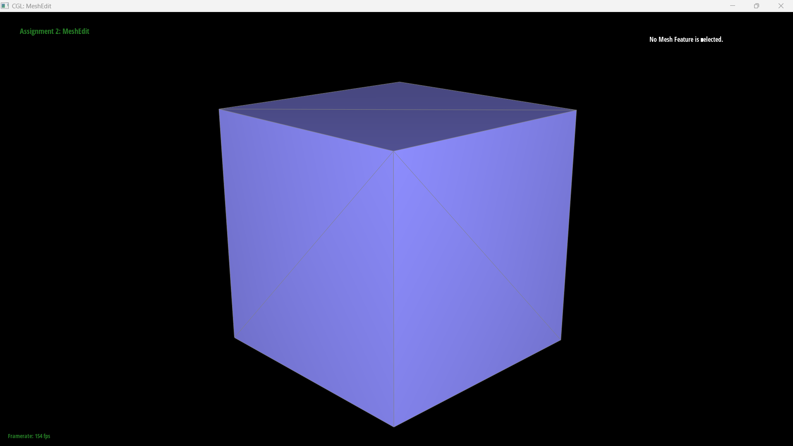 dae/cube.dae before subdividing. |
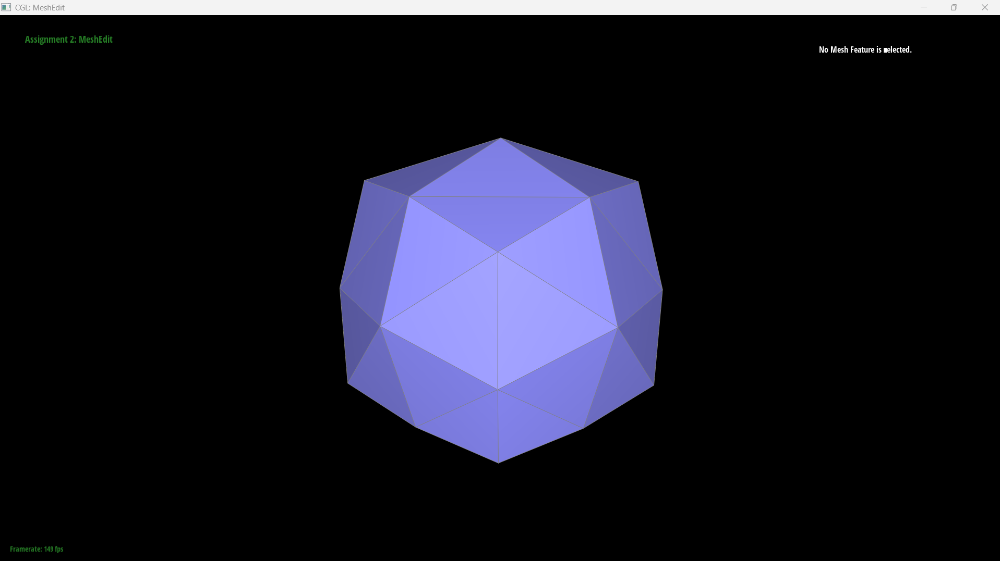 |
|
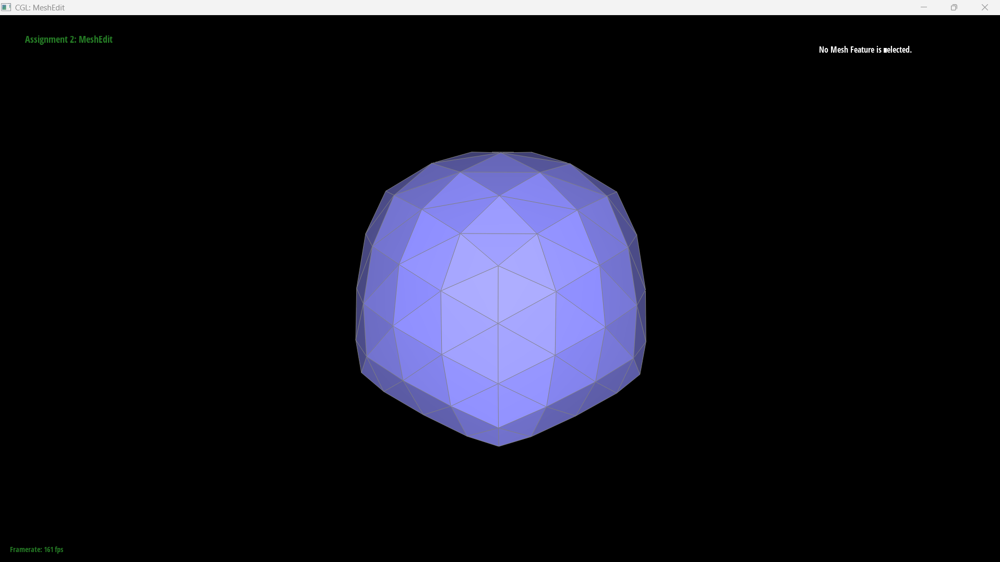 |
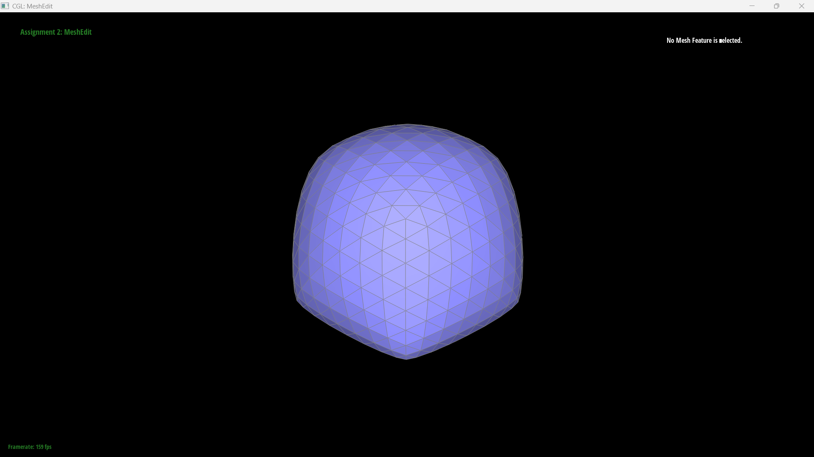 |
Sharp corners and edges
Subdivision rounds sharp features off, and it does so more each iteration. This is inherent rather than a bug: every vertex is replaced by an average of itself and its neighbours, so a corner is pulled towards the plane of the surface around it, and nothing in the rule distinguishes a corner that is meant to be sharp from one that is meant to be smooth.Degree-3 vertices lose the most, and the weights say why. For \(n \neq 3\) the vertex keeps \(1 - n \cdot \frac{3}{8n} = \frac{5}{8}\) of itself regardless of degree, but for \(n = 3\) the special case \(u = 3/16\) leaves it only \(1 - 3 \cdot \frac{3}{16} = \frac{7}{16}\). So a degree-3 corner keeps about 44% of its position where every other vertex keeps 62.5%, and gets pulled inward noticeably harder.
Pre-splitting can reduce the effect, but only if you split the right edges, and the comparison below is a good illustration of getting that wrong. The pre-processing used in the next section — splitting the six face diagonals — puts its new vertices at the centre of each face, which is as far from the creases as it is possible to get. The neighbourhood around each sharp edge is left exactly as it was, so there is no reason for the rounding to narrow, and it doesn't: the pre-split cube comes out slightly rounder, not sharper. It is a fix for symmetry, not for sharpness.
What would actually sharpen the edges is splitting the edges that run across a crease, close to it. That puts a tight ring of vertices either side of the feature, so when each vertex is averaged against its neighbours those neighbours are only a short distance away, and the smoothing is confined to a narrow band instead of spreading across the whole face. The crease still isn't preserved — the limit surface is smooth everywhere — but it is localised enough to read as an edge.
|
|
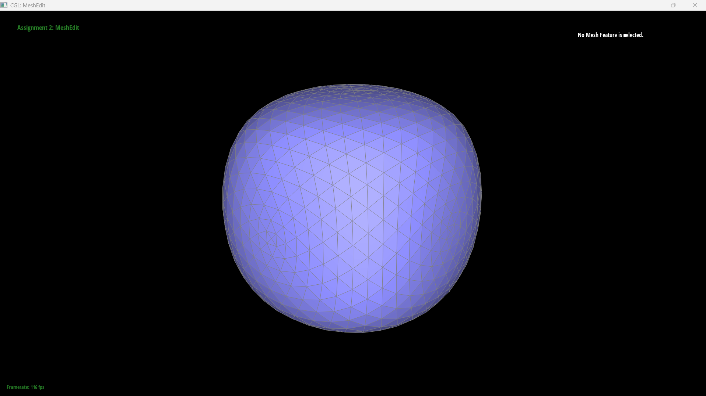 |
Why the cube comes out asymmetric
Look back at the subdivision series above and the cube is visibly lopsided from the first
iteration onward. The cube is geometrically perfectly symmetric, so the asymmetry has to come from the
connectivity, and it does. cube.dae is 8 vertices and 12 triangles, two per square
face, and each face is split along one diagonal. Reading the vertex degrees straight out of the
file gives
Eight corners that are identical in space, with five different degrees between them.
This is not a badly chosen triangulation; it is forced. Twelve triangles contribute \(12 \times 3 = 36\) corner incidences spread over 8 vertices, and
\[ \frac{36}{8} = 4.5 \]is not an integer, so no triangulation of a cube into 12 triangles can give all eight vertices the same degree. Some corners must have more neighbours than others.
Loop subdivision then reads that difference. Each vertex is averaged against its own neighbourhood, so corners with four neighbours move differently from corners with six, and the degree-3 corner is hit hardest because of the \(7/16\) special case above. The subdivided surface inherits the symmetry of the mesh, not of the shape the mesh happens to represent.
Making the cube subdivide symmetrically
The fix is to pre-process the mesh so its connectivity has the cube's own symmetry, and splitting the six face diagonals does exactly that.Take one square face \(PQRS\) triangulated along the diagonal \(PR\). Because the face is a square, the midpoint of that diagonal is the centre of the face, so splitting it puts a new vertex \(M\) at the centre and connects it to all four corners, leaving four triangles. Do that on all six faces and every original corner now connects to three adjacent corners along cube edges plus three face centres, giving
\[ \deg(P) = 3 + 3 = 6 \quad \text{for all eight corners} \]with the six new centre vertices at degree 4. The incidence count works out at \(8 \times 6 + 6 \times 4 = 72 = 24 \times 3\), consistent with the 24 triangles. Every corner is now equivalent, so Loop subdivision treats them identically and the result is symmetric.
|
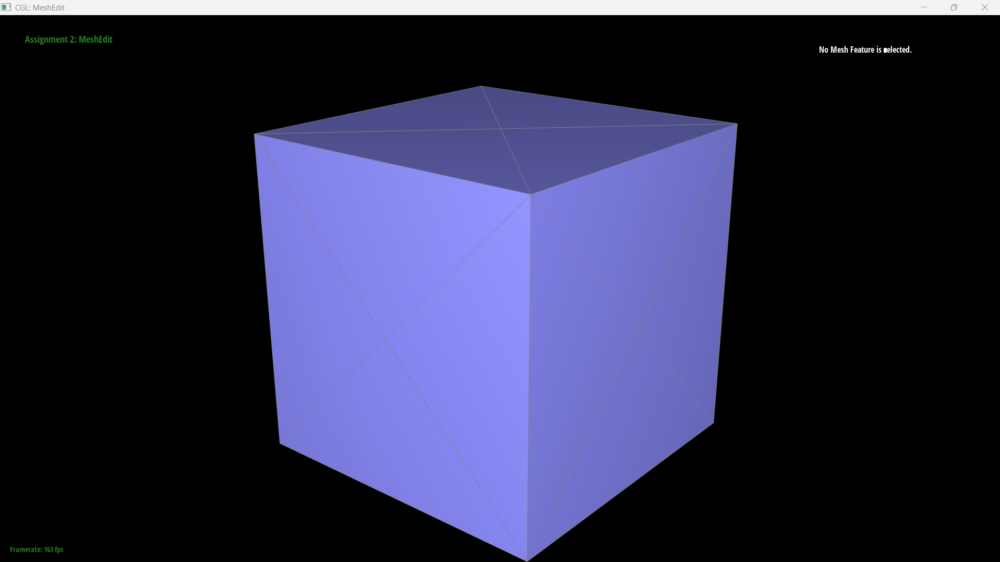 |
|
The general principle is that subdivision is a function of connectivity, not of geometry. If you want the output to have a symmetry, the input mesh has to have that symmetry in its half-edge structure, and pre-processing with splits and flips is how you put it there.